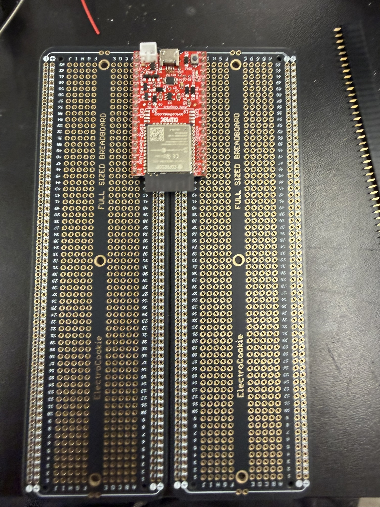
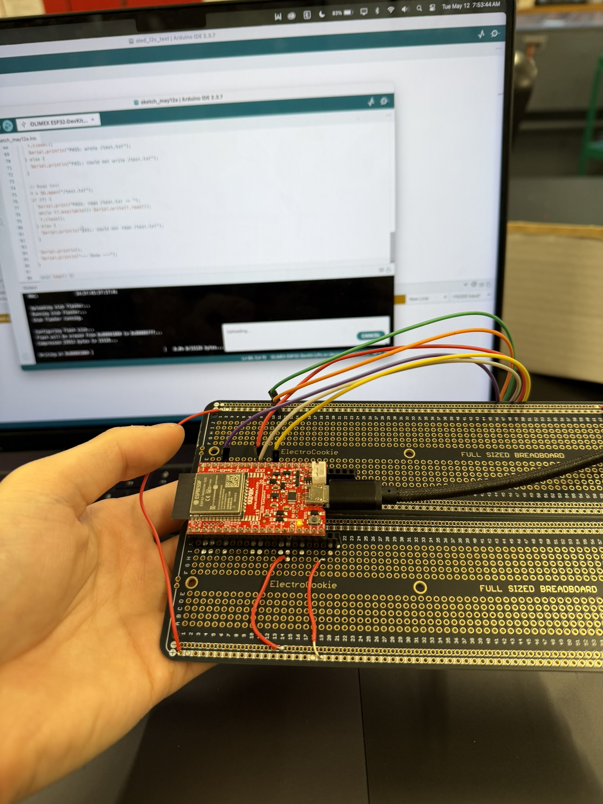
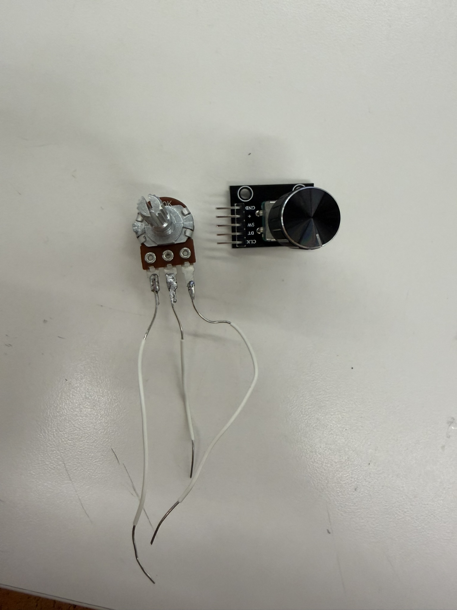

For my final project, I built a retro wooden radio around an ESP32 that supports four audio modes:
My motivation came from two places. I'm a huge fan of listening to and DJing music, and I've always been drawn to retro radios from the past, especially the kind that didn't depend on WiFi to play anything. At the same time, I really enjoy using my Bluetooth speaker at home. I wanted to combine all of these into a single enhanced speaker of sorts: something that looks good and is genuinely functional. Here is my journey building it, from the MVP to the finished radio.
For MVP week, I focused on building a small version of the radio and getting the fundamental input and output components working, including the OLED screen, rotary encoder, potentiometer, speaker, and amplifier. This MVP could connect to internet radio stations like SomaFM and deliver real-time audio to the user. I also designed a 3D-printed enclosure for the radio: a body, a speaker-mesh front panel, and a knob. I designed and milled a custom PCB based on the MVP wiring.
It was a functional product, but there were several improvements I wanted to make, including expanding the functionality and making the enclosure larger to accommodate the additional complexity I was hoping to add. For the full MVP process, see my Week 7 documentation.
For the integrated project, I wanted to add the remaining components I'd planned for the final radio: an FM radio module, Bluetooth, and MP3 playback. That meant configuring Bluetooth in the ESP32 Arduino code, wiring up the TEA5767 module on the breadboard, and adding the MicroSD card module so everything worked seamlessly. I also wanted to move all the wiring off the breadboard onto something more stable, either a protoboard or a custom milled PCB.
First, I needed to hook up the TEA5767 FM module to the rest of the circuit. The wiring was fairly straightforward, except that the module has an audio output meant for an aux cable, and that aux cable needed to connect to both ground and an audio pin.
I hadn't anticipated needing extra equipment for the FM module, and since the PS70 lab didn't have an aux-to-bare-wire cable, I had to get scrappy. I dug through the lab's salvage bin, found a pair of headphones with a 3.5 mm aux cable, and snipped the wires to get at the internals. I identified the ground wire and the audio output wire and used those to send audio from the TEA5767 module to my ESP32.


Configuring the TEA5767 was one of the hardest challenges of the integrated project since there were a lot of software and even hardware issues in getting a consistent radio signal out of it. For many iterations, I heard no signal at all from the FM module. I even tried a different FM chip, the SI4703, but I didn't end up using it: not only did it not work for me, it also had no module spot for an antenna, so it couldn't pick up signals as effectively as the TEA5767.


The core software conflict was between two I2S drivers. The FM audio path relies on the legacy I2S driver, while AudioTools uses the newer I2S driver, and the two can't both be active at once. What I eventually did was force AudioTools onto the legacy driver and control the TEA5767 directly over I2C through a tea5767Write() function:
bool tea5767Write(float freqMHz) {
unsigned long freqHz = (unsigned long)(freqMHz * 1000000.0f);
unsigned long pll = (4UL * (freqHz + 225000UL)) / 32768UL;
uint8_t b[5];
b[0] = (pll >> 8) & 0x3F;
b[1] = pll & 0xFF;
b[2] = 0x90;
b[3] = 0x10;
b[4] = 0x00;
Wire.beginTransmission(TEA5767_ADDR); // 0x60
Wire.write(b, 5);
return Wire.endTransmission() == 0;
}So the audio path for FM was:
Because of the ADC sampling, the FM audio quality is a bit rough at times, but it plays through the main speaker without needing any headphones.
An ongoing problem was that the FM module often crashed the ESP32 and made it reboot after working for about 30 seconds. Fixing this took six difficult iterations. First, I added heap monitoring with ESP.getFreeHeap(), printing the free heap right after FM setup and then every 5 seconds. I also lowered the sample rate from 32 kHz to 16 kHz, which halved the CPU load in the audio task. Then I made sure to shut off WiFi and Bluetooth, with a 20 ms delay, before turning on FM radio, so there was no interference from the other wireless components:
WiFi.disconnect(true);
WiFi.persistent(false);
WiFi.mode(WIFI_OFF);
btStop();Next, I uninstalled the I2S driver before installing the legacy driver, which cleared any leftover state from the previous mode, whether that was Bluetooth or WiFi.
i2s_driver_uninstall(I2S_NUM_0);I then increased the audio task's stack from 8 KB to 16 KB, which eliminated stack overflow as one of the causes of the crashes, and I monitored the stack with uxTaskGetStackHighWaterMark(), printing it every five seconds.
There was also an issue where the radio button seemed to get pressed when I wasn't pressing it, a phantom phenomenon of sorts that triggered reboot after reboot. I learned this was because GPIO 35 has no internal pull-up, so it picks up electrical noise and reads random highs and lows. To fix it, I moved the radio button to GPIO 17, which does have an internal pull-up. The lesson: you really need to study the pinout carefully. On the ESP32 I was using, GPIO 34, 35, 36, and 39 are input-only pins with no internal pull-ups, and it took me a long time to figure that out.
I ultimately got to a place where FM still needed to reboot after a while, but I made sure it rebooted automatically and saved which station you were on, so it stayed functional for the user. I suspect the remaining FM instability comes from memory pressure: it's all one firmware, linking together AudioTools, MP3, Bluetooth, WiFi, U8G2, the raw I2S, and the ADC. Even when those tools aren't in use during FM playback, they're all still allocated in the same firmware. Moving to a more computationally powerful chip or board might solve this, but for now I was happy with the FM progress and moved on.
Next I moved on to MP3, using a microSD card module and a 16 GB microSD card. The wiring of the module was fairly straightforward, but the software was an interesting problem. I had a few globals to declare at the start:
File audioFile;
StreamCopy copier(decoder, audioFile, 4096);
String tracks[32];
int trackCount = 0;
int currentTrack = -1;
bool paused = false;I learned how to scan the SD card for MP3 files specifically without being bothered by the other, non-MP3 files on the card, from this ESP32 microSD card tutorial.
The scanSD() function below walks the card, keeps only .mp3 files, and also skips macOS ._ metadata files:
void scanSD() {
trackCount = 0;
File root = SD.open("/");
while (trackCount < 32) {
File entry = root.openNextFile();
if (!entry) break;
String name = entry.name();
if (!entry.isDirectory() && (name.endsWith(".mp3") || name.endsWith(".MP3"))) {
int slash = name.lastIndexOf('/');
String basename = (slash >= 0) ? name.substring(slash + 1) : name;
if (basename.startsWith("._")) { entry.close(); continue; } // skip macOS metadata
tracks[trackCount++] = name.startsWith("/") ? name : ("/" + name);
}
entry.close();
}
root.close();
}I then wrote a function to load and play a track:
void playTrack(int idx, bool startPaused = false) {
if (idx < 0 || idx >= trackCount) return;
if (audioFile) audioFile.close();
audioFile = SD.open(tracks[idx]);
if (!audioFile) return;
currentTrack = idx;
paused = startPaused;
Serial.print(startPaused ? "Loaded [" : "Playing [");
Serial.print(idx); Serial.print("] ");
Serial.println(tracks[idx]);
}
void nextTrack() { if (trackCount) playTrack((currentTrack + 1) % trackCount); }
void prevTrack() { if (trackCount) playTrack((currentTrack - 1 + trackCount) % trackCount); }It was fun to see how the audio worked and to build the control logic so it advances to the next song once the current one finishes. It gave me more appreciation for my Spotify!
void loopMP3Mode() {
if (!paused && audioFile && audioFile.available()) {
copier.copy(); // push next chunk of audio
} else if (audioFile && !audioFile.available() && !paused) {
nextTrack(); // track ended -> advance
}
}I also wanted to include Bluetooth. Initially I used an ESP32-S3 board, which I learned doesn't support Classic Bluetooth. As a result, I had to switch to a normal ESP32, which does. I needed Classic Bluetooth rather than Bluetooth Low Energy (BLE) because A2DP requires Classic Bluetooth. Note that the XIAO couldn't have done any of this at all.

I used the ESP32-A2DP library, which paired naturally with the AudioTools library that was already working for MP3. I got tripped up early on because older ESP32-A2DP examples online used a set_pin_config() call to tell the library which I2S pins to use, but that method no longer exists in the current library version. So instead, I went through the documentation and used a BluetoothA2DPSink that references my I2S stream. So confusing!
BluetoothA2DPSink a2dp_sink(i2s);I then made the radio discoverable, but only when the pair button is pressed:
a2dp_sink.set_discoverability(ESP_BT_GENERAL_DISCOVERABLE);To make the pairing feel like a polished final product, I added sound cues. While the radio is discoverable and waiting for a phone, it plays an 880 Hz beep every two seconds. When a phone connects, I added a connect chime. I thought an arpeggio from C up to G up to a higher C would be cute, and I added a disconnect chime of those same three notes descending when a phone disconnects or loses Bluetooth.
Because of Bluetooth, I had to make the ESP reboot every time you change modes. The ESP32-A2DP library doesn't like being started and stopped repeatedly: when a2dp_sink.start() runs, it brings up the entire Bluetooth stack, including the controller, the host stack, memory buffers, background tasks, and event handlers. All of this allocates a lot of memory. It's easier to just let the ESP shut off and reboot so it can free all of that.
On top of that, Bluetooth and WiFi conflict because the ESP32 has a single radio and antenna shared between them, both at 2.4 GHz. They can run at the same time, but they have to take turns, and since I want continuous audio streaming, it's cleaner to reboot so Bluetooth starts fresh and never has to share with WiFi, and vice versa. So ESP.restart() is called before every mode switch.
With all the modes working together synchronously thanks to the mode-switch reboot, I wanted to move everything off the breadboard onto a more solid surface. Since I was still thinking about future changes, I decided against a custom milled PCB and went with a protoboard instead, which I'd never used before.
I realized that to reach both sides of the ESP32's pins, I needed two protoboards rather than one, so I soldered two protoboards together. That made for a larger but more functional product. It took an entire day's work, because there were so many pins to solder, though I think I hit a flow state while doing it. The protoboard gave me great soldering practice, and I think I got much better at it. It also forced me to write down and confirm every wiring connection and pin number I was using, which made me appreciate that each pin has its own function and that it's important to track which pins you use, since some of them, as I saw with the GPIO 35 mishap, don't have the mechanisms you need.


| Pin | ESP32 GPIO |
|---|---|
| VCC | +3.3 V |
| GND | GND |
| CS | GPIO 5 |
| SCK | GPIO 18 |
| MISO | GPIO 19 |
| MOSI | GPIO 23 |
| Pin | ESP32 GPIO |
|---|---|
| VIN | +5 V |
| GND | GND |
| DIN | GPIO 12 |
| BCLK | GPIO 13 |
| LRC | GPIO 14 |
| Speaker +/- | Speaker terminals |
| Pin | ESP32 GPIO |
|---|---|
| + | +3.3 V |
| GND | GND |
| CLK | GPIO 27 |
| DT | GPIO 26 |
| SW | GPIO 25 |
| Button | GPIO |
|---|---|
| MP3 mode | GPIO 32 |
| BT mode | GPIO 33 |
| Radio mode | GPIO 17 |
| Pair | GPIO 15 |
| Mute | GPIO 4 |
| Previous | GPIO 16 |
| Next | GPIO 2 |
| Pin | ESP32 GPIO |
|---|---|
| VCC | +3.3 V |
| GND | GND |
| SDA | GPIO 21 |
| SCL | GPIO 22 |
| Pin | ESP32 GPIO |
|---|---|
| VCC | +3.3 V or +5 V, module-dependent |
| GND | GND |
| SDA | GPIO 21, shared with OLED |
| SCL | GPIO 22, shared with OLED |
| Audio out | GPIO 35, ADC1_CHANNEL_7 |
I was interested in making the radio rechargeable, using either a LiPo battery or one that attaches directly to an ESP32 LiPo board, so I tested a few options. I was getting about 3.3 V, but I needed a way to step that up to 5 V, since some of my components run on 5 V. I went around the lab trying different voltage boosters and converters on the 18650 rechargeable battery module.

When I tried the MT3608 boost converter, I soldered it onto a TP4056 charging module. But when I tested it on the actual circuit, I started getting smoke from something on my breadboard. I pulled the power, but apparently not quickly enough. My SD card and my 2.4" OLED display were fried and unusable. This was a big lesson in being careful with high voltages: I think I hadn't dialed the booster's voltage down enough, and it overpowered the rest of the circuit. From then on, I always used a multimeter to confirm the voltage before connecting anything to the circuit. I became a beast on the multimeter. I also tried another booster that needed a USB-A-to-bare-wire connector, but it only gave me about 3.7 V when I needed 5 V.


I eventually realized it might just be easier to power the whole system through a USB-C plug-in, rather than going through a rechargeable battery. People usually use a radio plugged in anyway and don't always need it to be portable. So I soldered a USB-C port to the ESP32's ground and power, and found it much easier to just plug in this way.


For the final project, I wanted a better enclosure than the MVP's, something that felt more retro, which I planned to achieve with a wood cover. I created a wood design in CAD and sketched out a diagram of exactly what I wanted. After measuring every dimension with calipers, I 3D-printed the corresponding parts: the body, the back panel, and the knob.


Through several iterations, I realized I had to add tolerances for the rotary encoder to fit into the knob. Specifically, 0.2 mm turned out to be the perfect tolerance for press-fitting a knob onto a rotary encoder. I'd initially used zero tolerance, which made it impossible to fit the encoder into the knob at all. I found it empowering to take something I'd sketched on paper and turn it into a real physical product, especially the knob, which I custom-designed myself. I also made the change I'd wanted since the MVP: I switched the volume control from a potentiometer to a rotary encoder, which worked much better. It was more precise and didn't fluctuate once I set the volume.


I then laser-cut the wooden front panel, going through several iterations to get the dimensions right for the speaker hole and the button holes. I'd initially made circular holes for the buttons, thinking only the yellow part of each button would poke through. That didn't work because the button cap was larger than the hole, at least for these buttons, so instead I switched to square laser-cut holes, pushed the whole square button through, and glued them in place.
I went around the lab looking for speaker mesh. I found one candidate, a metal grille, but it didn't give off the retro vibe I wanted, so instead I used a piece of dark denim from the fabrics bin as my speaker mesh.
I was conflicted about how to hold the USB-C and microSD card adapters in place at the back. I ended up hot-gluing a cardboard structure to the back panel so it held the modules right next to the openings.


There were a lot of bogus files showing up from the SD card on the radio from macOS metadata files, including a phantom track /._song.mp3 that appeared in the playlist. This makes sense: macOS sometimes writes hidden files that start with a period and leaves them on the card. The ._ check inside scanSD(), shown earlier, skips any file whose name starts with ._, so only real music shows up.
After adding the rotary encoder for volume, I needed to reverse its direction by swapping the ++ and -- in the interrupt handler. I also learned that the KY-040 rotary encoder has internal resistors, so I didn't need to add resistors as I had in earlier weeks:
void IRAM_ATTR onEncoderTurn() {
unsigned long now = millis();
if (now - lastEncIRQ < 2) return; // debounce: ignore IRQs <2ms apart
lastEncIRQ = now;
if (digitalRead(ENC_DT) == digitalRead(ENC_CLK)) encoderDelta--;
else encoderDelta++;
}When I was adding more internet radio stations, I realized some stream URLs returned HTTP 301/302 redirects. This is because many commercial stations lock their streams behind their apps, so no public URL exists. iHeartRadio in LA and Boston, for example, doesn't have public streams. Only public radio, like NPR Classical or college radio, reliably offers open MP3 streams. I also added some AAC stations, but they didn't play as smoothly as the MP3-only streams, since they're higher quality and a heavier memory load.
After making all these fixes and assembling the whole radio with some hot glue and a few screws, I ended up with a radio I'm genuinely proud of. I learned so much through this process, including what it really means to take an idea from beginning to completion, and it was deeply satisfying to see it all come together at the end.
Moving forward, a few changes I'd like to make: I'd look into a chemical solvent transfer onto wood, so I could print images from a toner-based printer directly onto the wood, things like button labels and maybe a logo. I'd also consider designing a custom milled PCB, and looking into a more computationally powerful microcontroller to handle the memory load of all four audio modes.
Reflecting on this project, I'm so happy I was able to take this class. As someone who started out totally inexperienced, seeing all of this come to fruition means a lot to me. I'm so grateful to the teaching staff. Thank you so much to Nathan, Bobby, Kassia, and Jessica for their support and constant guidance throughout. I couldn't have done it without your help! Thank you PS70!
Files will be added here.